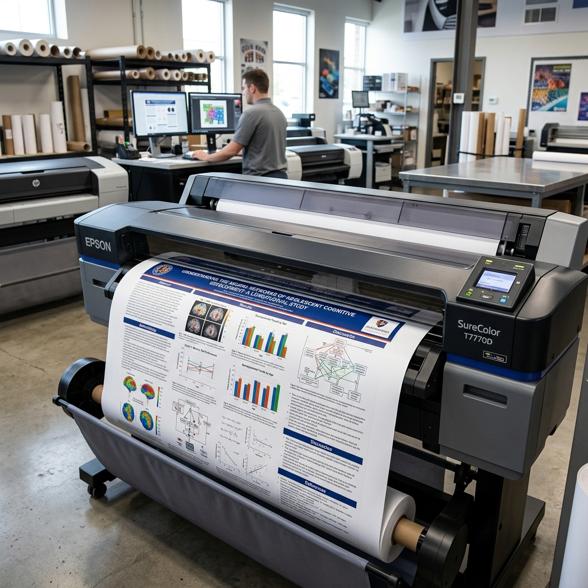

한 권의 전공책부터 수만 페이지의 기업 문서까지,
완벽한 디지털 전환(DX) 솔루션
10분 완성 스마트 스캔과 AI 화질 복원 OCR, 그리고 고해상도 대형 출력까지 한 번에
초고속 스캐너와 고성능 대형 프린터로 학습 효율과 비즈니스 가치를 극대화하세요. 태블릿·AI(RAG) 시스템에 최적화된 고순도 디지털 파일은 물론, 학술 포스터 등 전문 대형 출력물까지 전문가가 직접 완성해 드립니다.

무거운 전공책부터 대형 포스터까지,
스캔데이가 한 번에 해결해 드립니다.
안녕하세요, 왕십리역 앞 가장 든든한 작업 공간 스캔데이 왕십리점입니다.
저희는 학생들이 무거운 가방 대신 가벼운 태블릿과 E-book 리더기로 더 편하게 공부할 수 있는 방법을 고민합니다. 단순히 기계만 빌려드리는 것이 아니라, 1mm의 오차 없는 정밀 재단부터 눈이 편안한 고해상도 스캔까지 여러분의 소중한 자료를 모든 스마트 기기에 최적화된 디지털 파일로 옮겨드립니다.
낱장 서류 한 장부터 수천 페이지의 전공 서적, 그리고 시원하게 뽑아야 하는 A1·A2 대형 출력까지. 종이에 관한 고민이라면 무엇이든 스캔데이에서 한 번에 해결하세요. 복잡하고 번거로운 작업은 저희가 도와드릴 테니, 여러분은 오직 공부에만 집중하세요!
북스캔 & OCR: 전공책을 검색 가능한 스마트 PDF로 변환 (10분 완성)
분철 & 제본: 튼튼하고 잘 펼쳐지는 프리미엄 스프링 제본
대형 출력: 학술 포스터와 도면도 선명하게 바로 출력
문서 관리: 낱장 서류부터 대량 문서 스캔까지 완벽 대응
"가방은 가볍게, 공부는 스마트하게. 스캔데이가 함께합니다."
왜 스마트한 학습자들은 스캔데이를 선택할까요?
아이패드, 갤럭시탭은 물론 E-book 리더기 등 모든 기기에서 완벽한 가독성을 보장합니다.
검색 가능한 PDF (ABBYY FineReader)
세계 최고 수준의 ABBYY 엔진을 사용합니다. AI(RAG)가 오독 없이 즉시 읽을 수 있는 고순도 정제 데이터를 생성하여 나만의 지식 비서 구축을 돕습니다.
ABBYY Engine · AI(RAG) Ready1mm의 오차 없는 정밀 재단
소중한 책이 상하지 않도록 전문가가 직접 정밀 커팅기로 작업합니다. 재단 단면이 매끄러워 스캔 품질이 극대화됩니다.
10분 완성 & 현장 즉시 지원
기계만 빌려드리지 않습니다. 전문가가 옆에서 바로 도와드려 초보자도 10분 만에 완벽하게 작업을 마칠 수 있습니다.
Expert SupportA1·A2 대형 포스터 출력
학술 발표용 포스터부터 설계 도면까지, 선명한 고해상도 대형 출력이 매장에서 즉시 가능합니다.
Large Format기업 문서 아카이빙 & 프라이빗 보안
세금계산서 발행 및 행정 지원은 물론, 프라이빗 쉴드 수준의 철저한 보안 관리 시스템으로 대량의 종이 문서를 안전한 디지털 자산으로 전환합니다.
B2B DX · Safe & SecureAI 스마트 이미지 복원 (사전처리)
단순 텍스트 추출이 아닙니다. OCR 옵션 선택 시, ABBYY 엔진이 자동 수평 정렬, 화이트 밸런스, 노이즈 캔슬링을 동시 적용하여 낡은 전공책도 완벽한 E-book 화질로 리마스터링 합니다.
AI Auto-Correction북스캔 스캔과정
전문가의 손길과 최신 장비로 완성되는 완벽한 북스캔 프로세스
정밀 재단 (필수)
전문가가 책의 등 부분을 1mm 오차 없이 깔끔하게 커팅하여 스캔 준비를 마칩니다.
✨ 스캔을 위한 가장 첫 번째 필수 단계입니다!
초고속 셀프 스캔
고성능 스캐너로 수백 페이지의 책도 10분 내외로 고해상도 PDF 변환을 완료합니다.
기기 고장 방지를 위해 반드시 미리 제거해 주세요!
스프링 제본 및 복원
스캔이 끝난 책을 프리미엄 스프링으로 튼튼하게 묶어 다시 새 책처럼 만들어 드립니다.
📖 이전보다 더 편하게 넘겨볼 수 있는 새 책으로 복원!
왕십리역 도보 5분,
가장 빠르고 쾌적한 북스캔 공간

지능형 디지털 전환을 위한 스캔데이 솔루션
단순한 스캔을 넘어, 당신의 지식을 가장 가치 있는 디지털 자산으로 변화시킵니다.

북스캔 & OCR (ABBYY 엔진)
글로벌 No.1 ABBYY FineReader 탑재. 이북 리더기는 물론 AI 학습용 데이터로도 완벽하게 호환되는 RAG-Ready 스마트 PDF를 제작합니다.
자세히 보기 →


스캔데이 왕십리점 스캔 및 출력 가격 안내
| 북스캔 및 문서 스캔 패키지 | |
| 초고속 북스캔 30분(최대10권) | 6,000원 |
| ABBYY 정밀 OCR(100쪽) | 500원 |
| ABBYY 다국어 OCR(100쪽) | 700원 |
| 책 분철 및 스프링 제본 | 3,000원 |
| 정밀 책 커팅 재단 | 1,000원 |
| 대량/낱장 스캔(100p부터) | 50원 |
| B2B 기업 문서 스캔(견적) | 변동가격 |
| 일반 인쇄 및 특수지 출력 | |
| 최저가 A4 흑백 인쇄/복사 | 50원 |
| A4 컬러 인쇄 (일반 잉크젯) | 100원 |
| A4 고화질 컬러 (레이저) | 250원 |
| A3 흑백 인쇄 (도면/차트) | 100원 |
| A3 컬러 인쇄 (일반 잉크젯) | 200원 |
| A3 고화질 컬러 (레이저) | 500원 |
| 고급 특수지 인쇄(포트폴리오) | 변동가격 |
| 포스터 및 대형 출력 | |
| A2 대형출력 (백상지/도면) | 7,000원 |
| A1 대형출력 (백상지/도면) | 13,000원 |
| A2 포스터 출력 (프리미엄) | 14,000원 |
| A1 포스터 출력 (프리미엄) | 26,000원 |
| 비규격 대형 및 특수 사이즈 문의 | 변동가격 |
| 기업 제휴 및 대량 작업 상담 | |
| 기업 제휴 및 대량 작업 상담 | 전화 문의 |
* 가격은 매장 상황에 따라 변동될 수 있습니다.
📅 월-일 모두 오픈! 간편한 네이버 예약
왕십리역 스캔데이는 저작권법 준수를 위해 고객 직접 조작으로 운영됩니다. 공휴일 제외 월~일 모두 운영하며, 대기 시간 최소화를 위해 우선 예약제를 권장합니다. 물론 예약 없이 방문하셔도
현장에서 바로 이용하실 수 있습니다.
(월·화·수·금 12:00-20:00 / 목 10:00-16:00 / 토 12:00-19:00 / 일 10:00-16:00
운영)
시간 선택
방문을 원하는 날짜와 시간을 선택해 주세요.
서비스 선택
셀프 북스캔, 재단, 제본 등 필요한 서비스를 선택합니다.
권수 입력
스캔하실 책이 총 몇 권인지 적어주세요.
추가 옵션
스프링 제본(복원) 여부를 선택하시면 정확한 안내를 받으실 수 있습니다.
예약 후 매장에서 상세한 안내를 도와드립니다
스캔데이 전문 서비스 가이드
초고속 북스캔부터 프리미엄 대형 출력까지, 스캔데이의 압도적인 퀄리티와 노하우를 확인해 보세요.
왕십리 스캔 매장 방문 전 필독: 책이 많을수록 이득? '진짜' 스캔 비용 대공개!
스캔데이만의 투명한 가격 정보! 기본 30분에 최대 10권 스캔 가능한 시간제 스캐너 대여 요금제를 확인해보세요.
전문 읽기 →
기업 디지털 전환(DX)의 시작, B2B 대형 출력 및 완벽한 문서 자산화
비전의 일치는 시야의 일치에서 시작됩니다. 스타트업 및 B2B 기업을 위한 대형 조감도 출력과 글로벌 1위 ABBYY OCR 디지털 자산화 솔루션.
전문 읽기 →
한양대 학회 포스터 출력, 미세한 수식까지 무결점 인쇄
수개월의 연구 데이터를 완벽하게 증명하십시오. 한양대 박사 과정 및 교수진을 위한 스캔데이 A1/A2 프리미엄 포스터 대형 출력 솔루션.
전문 읽기 →자주 묻는 질문
스캔데이 이용 전 궁금한 점을 확인해 보세요.
기기 조작이 처음이시더라도 현장에서 직원이 1:1로 상세히 설명하고 가르쳐 드리니 걱정 마시고 편하게 방문해 주세요!
1) 북스캔 복원 제본: 페이지 수 무관 1권당 3,000원 고정가.
2) 인쇄 출력물 제본: [페이지당 인쇄비 50원] + [권당 제본비 3,000원]이 합산됩니다. (예: 100페이지 출력 시 인쇄비 5,000원 + 제본비 3,000원 = 총 8,000원)